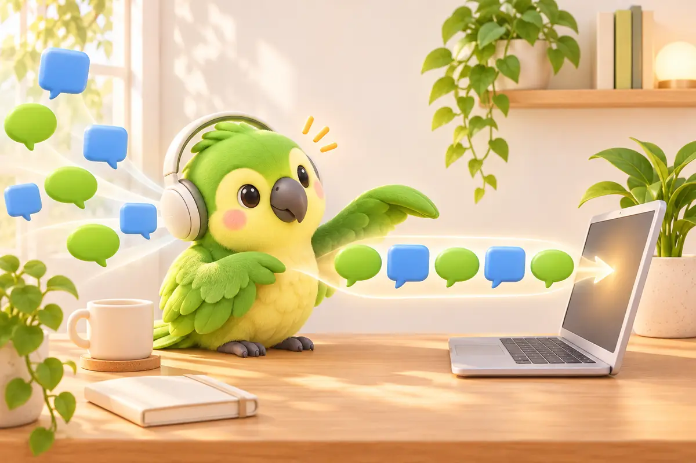
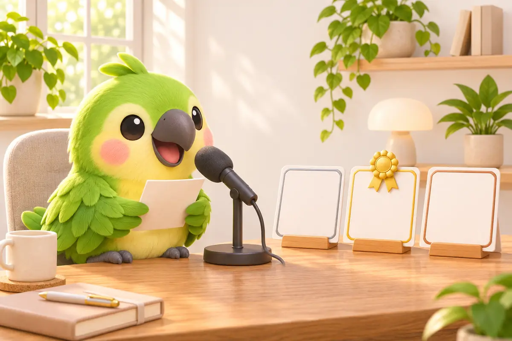

Scan with your iPhone cameraParroting for iPhone · US$4.99 once
Scan with your iPhone cameraParroting for iPhone · US$4.99 once
I'm Sona Orbit, the independent developer who builds Parroting on my own. Parroting is my free dictation app for Mac. You can download every model mentioned here directly inside the app. The numbers in my comparison table come from public transcribe.cpp benchmarks (Chinese error rates on the FLEURS Chinese test set, speeds measured on an M4 Max GPU), matching my speech models guide. Other figures cite official sources. Your Mac, your voice and what you say will change the results, so treat them as relative. Feature details reflect Parroting 0.4.15.
1. Quick Picks: Match Your Speaking Habits
- English-only dictation: Look at the Parakeet series from NVIDIA. It is fast and accurate for English, though it does not support Chinese.
- Fast, lightweight, everyday default: SenseVoice Small (253 MB). Parroting marks this as “Recommended.” It runs smoothly even on older Macs.
- Maximum Chinese accuracy: Qwen3-ASR 1.7B (1.5 GB) delivers the lowest Chinese error rate on my list. Choose Qwen3-ASR 0.6B (850 MB) for a balanced alternative.
- Taiwanese Mandarin mixed with English: Try Breeze-ASR-25 (1.2 GB). MediaTek Research tuned it for Taiwanese Mandarin and bilingual code-switching, though it runs the slowest.
- Fine-tuning on your own recordings: The open-source parroting-asr-training toolkit targets SenseVoice Small. See my previous guide for the workflow.
2. Comparison: Size, Speed, and Error Rates
| Model | Developer | Download Size | Chinese Error Rate (Lower is better) | Speed (Higher is faster) | Languages |
|---|---|---|---|---|---|
| SenseVoice Small | Alibaba FunAudioLLM | 253 MB | 10.1% | 267× | ZH, YUE, EN, JA, KO |
| Qwen3-ASR 0.6B | Alibaba Qwen | 850 MB | 7.6% | 69× | 30 languages |
| Qwen3-ASR 1.7B | Alibaba Qwen | 1.5 GB | 7.1% | 41× | 30 languages |
| Fun-ASR Nano | Alibaba FunAudioLLM | 891 MB | 8.6% | 78× | ZH, EN, JA |
| Fun-ASR Nano Multilingual | Alibaba FunAudioLLM | 891 MB | 7.3% | 70× | 31 languages |
| Breeze-ASR-25 | MediaTek Research | 1.2 GB | 8.1% | 22× | ZH, EN (Taiwanese Mandarin) |
| Whisper Large v3 Turbo | OpenAI | 886 MB | 8.5% | 44× | ~100 languages |
Keep two details in mind when reading these benchmarks:
- FLEURS consists of read news broadcasts scored against Simplified Chinese transcripts. SenseVoice shows the highest error rate here, but for short everyday sentences the gap may not feel that large. FLEURS also does not measure Taiwanese accents or English code-switching where Breeze-ASR-25 shines.
- The speed gap is substantial. SenseVoice Small runs more than ten times faster than Breeze-ASR-25. That determines how long you wait after releasing the shortcut key.
3. Real-World Dictation vs. Synthetic Benchmarks
Most online benchmarks test standardized datasets on server-grade GPUs. When you press a shortcut to dictate on your Mac, three factors matter most:
- How fast does text appear when you release the key? Waiting 0.2 seconds feels instant. Waiting 2 seconds disrupts your flow.
- Does mixed technical speech like “this PR's logic looks off, can you check the API response” get mangled into phonetic errors or unexpected characters?
- How large is the download, and how much RAM does it need? An 8 GB Mac running multiple apps feels memory pressure quickly.
In past years, most Mac speech-to-text tools relied on OpenAI Whisper. Using Whisper for everyday Chinese dictation brings clear tradeoffs: high accuracy requires large models that make you wait, output occasionally mixes script forms, and periods of silence can trigger hallucinations like “Thanks for watching.” These drawbacks explain why SenseVoice, Qwen3-ASR, and Breeze-ASR-25 have gained popularity.
4. SenseVoice Small: Fast, Daily Workhorse
SenseVoice Small is an open-source model from Alibaba FunAudioLLM. Its key advantage is non-autoregressive decoding: instead of predicting text token by token, it generates the full transcript in a single pass. Official benchmarks state it runs more than 5 times faster than Whisper-Small and 15 times faster than Whisper-Large.
- Experience: Release your shortcut key after a sentence, and text appears at your cursor almost instantly.
- Languages: Chinese, Cantonese, English, Japanese, and Korean, with automatic language detection.
- Tradeoffs: Slightly higher Chinese error rates than larger models. Unfamiliar names or newer English terms like Gemini and Claude can produce homophone errors.
Parroting adds local post-processing to cover these gaps. It converts to Traditional or Simplified Chinese when you dictate Chinese, fixes punctuation, inserts clean spacing around English words, and uses a phonetic personal dictionary to lock in your custom terms.
5. Qwen3-ASR: Highest Chinese Accuracy
Qwen3-ASR comes from Alibaba's Qwen team. The team says it builds on the audio understanding of Qwen3-Omni. It supports 30 languages alongside 22 Chinese regional dialects and accents, including Hong Kong and Guangdong Cantonese, Wu, and Minnan.
- Accuracy: In my benchmark table, the 1.7B model achieves the lowest Chinese error rate at 7.1%, while 0.6B scores 7.6%.
- 0.6B vs. 1.7B: For an always-ready input tool, 0.6B (850 MB) strikes the best balance between speed and precision. The 1.7B model (1.5 GB) is more accurate, but slower and more memory-intensive.
- Best for: Fast speakers, regional accents, or polyglot workflows.
Fun-ASR Nano (891 MB) from the same lab offers another strong alternative: Chinese accuracy close to Qwen3-ASR 0.6B, with a Multilingual edition supporting 31 languages.
6. Breeze-ASR-25: Taiwanese Mandarin and Code-Switching
If you speak Taiwanese Mandarin mixed with English, such as “this PR's logic looks off, can you check the API response,” general-purpose models often stumble at language boundaries. Breeze-ASR-25 is an open-source model from MediaTek Research built on Whisper Large-v2, fine-tuned specifically for Taiwanese Mandarin and bilingual code-switching.
Official model card word error rates compared to stock Whisper Large-v2:
| Dataset | Content | Whisper Large-v2 | Breeze-ASR-25 | Improvement |
|---|---|---|---|---|
| CommonVoice16-zh-TW | Taiwanese Mandarin | 9.84 | 7.97 | −19% |
| ASCEND-MIX | Mixed ZH-EN | 21.01 | 16.38 | −22% |
| CSZS-zh-en | Mixed ZH-EN | 29.49 | 13.01 | −56% |
Bilingual code-switching shows the strongest gains. For extended continuous Taiwanese Mandarin speech on the Formosa benchmarks, gains range between 0% and 9%, with one subtest slightly trailing.
The cost: It is still a Whisper Large model under the hood. It is the slowest option in this lineup (22× speed, compared to 267× for SenseVoice Small). Short bursts of dictation will feel sluggish. For long uninterrupted passages of mixed technical discussion or meeting notes, it is worth testing.

7. Whisper and Built-in macOS Dictation
Whisper: OpenAI's multilingual engine supports the most languages (~100). Large v3 Turbo (886 MB) delivers a solid 8.5% error rate, but runs much slower than SenseVoice. Downsizing to Small or Tiny cuts latency while noticeably degrading accuracy. It occasionally introduces unexpected character variants or hallucinates on silence.
macOS Built-in Dictation: Convenient and requires no install (Apple guide). However, on Apple's feature availability list, Chinese (Taiwan) is excluded from on-device processing and routes audio to Apple servers. Built-in dictation also lacks custom models and phonetic dictionaries.
8. Take Two Minutes to Test With Your Own Voice
Public benchmarks use other people's voices reading someone else's scripts. Your speaking rate, microphone distance, and everyday vocabulary are unique. The model with the lowest benchmark error rate might not understand your voice best. Parroting includes a built-in testing workflow:
- Record a few reading rounds: Settings → Personalization → “Read aloud.” Each round has 10 sentences and takes about 2 minutes. The app flags mistakes instantly and calculates your error rate. One out of every five sentences serves as an evaluation test set. Read several rounds to build a reliable test suite.
- Download target models: Settings → Talk → Speech model & language → “Manage models.” For example, SenseVoice Small, Qwen3-ASR 0.6B and Breeze-ASR-25.
- Compare using the same test set: Click “Test with your read-aloud recordings” at the top of the “Manage models” window to view error rates for each model across your recordings.
You will quickly see whether the 253 MB SenseVoice Small is accurate enough for your setup, or if a larger model justifies the extra resource usage.

9. Fixing Remaining Errors After Choosing a Model
No generic model knows your coworker's name or your team's internal code names. A practical three-part setup solves this:
- Start with a fast baseline: Use SenseVoice Small or Qwen3-ASR 0.6B for everyday dictation. Press to speak, release to paste.
- Route recurring terms to your personal dictionary: When you correct a pasted name or technical term, Parroting compares how the words sound and adds the pair to the confirm list. Click “Add to dictionary” to fix it on your next sentence. It works even with AI turned off.
- Clean up disfluencies with optional AI: If you regularly say “uh, um, no wait, make it 3:30,” enable AI cleanup using Apple Intelligence or a free Gemini key.
To reduce error rates further, read my earlier guide on a three-layer fix from dictionaries to custom speech models.
10. Frequently Asked Questions
Is there any fee to download or switch models in Parroting?
No. Parroting is completely free. All listed models can be downloaded and swapped inside the app with no character or minute limits. Each model is released under its creator's open-source license. Check the license before you use one.
Does downloading multiple models keep using up RAM?
No. Downloaded models only take up disk space. Only the active model stays in memory, and the app releases it after idle periods (the next dictation adds a brief 0.1 to 0.4 second warmup). Remove unused models anytime in “Manage models.”
Which model runs best on a Mac with 8 GB of RAM?
Start with the default SenseVoice Small (253 MB). It uses minimal memory and responds fastest. If you need higher precision, try Qwen3-ASR 0.6B (850 MB). Breeze-ASR-25 and Qwen3-ASR 1.7B consume more memory when running multiple heavy applications.
Which model has the lowest Chinese error rate?
In the transcribe.cpp FLEURS Chinese benchmark, Qwen3-ASR 1.7B scored best at 7.1%. That benchmark measures read news scripts. Accented speech and code-switching behave differently, so test models using your own read-aloud recordings.
Why not just use built-in macOS dictation?
Built-in dictation works well for quick occasional phrases. However, Chinese (Taiwan) audio is sent to Apple servers rather than processed on-device. It also lacks customizable models and personal phonetic dictionaries.